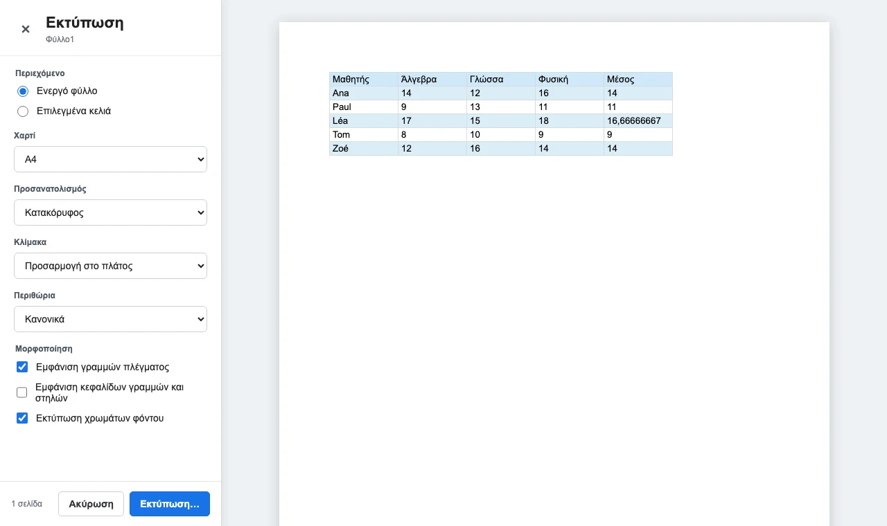

Εκτύπωση
Το Αρχείο › Εκτύπωση… ή το Ctrl P δείχνει τις σελίδες όπως θα εκτυπωθούν.

| Ρύθμιση | Επιλογές |
|---|---|
| Περιεχόμενο | το ενεργό φύλλο, ή τα κελιά που επιλέχθηκαν πριν ανοίξει το παράθυρο |
| Χαρτί | A4, Letter |
| Προσανατολισμός | κατακόρυφα, οριζόντια |
| Κλίμακα | Πραγματικό μέγεθος· Προσαρμογή στο πλάτος: όλες οι στήλες στο πλάτος μιας σελίδας· Προσαρμογή σε μία σελίδα |
| Περιθώρια | κανονικά, στενά, πλατιά |
| Μορφοποίηση | πλέγμα, κεφαλίδες γραμμών και στηλών, χρώματα φόντου |
Το Εκτύπωση… ανοίγει το παράθυρο του προγράμματος περιήγησης, όπου επιλέγετε εκτυπωτή ή αποθήκευση σε PDF.
- Εκτυπώνονται μόνο τα κελιά, με τη μορφοποίησή τους: όχι γραφήματα, εικόνες ή sparklines.
- Οι κρυφές γραμμές και στήλες δεν εκτυπώνονται.
- Ένα πλαίσιο ελέγχου εκτυπώνεται ως TRUE ή FALSE.
- Εκτυπώνεται ένα φύλλο κάθε φορά.
Για εκτύπωση με τα γραφήματα, αποθηκεύστε το βιβλίο και ανοίξτε το στο Excel ή στο LibreOffice.